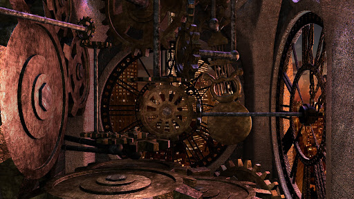

Du öffnest die Augen und dein Blick schweift nach oben. überall um dich herum befinden sich gewaltige Zahnräder und Zeiger. Der Boden vibriert bei jedem Ticken. Das Ticken ist unaufhörlich und regelmäßig. Du bemerkst, dass du dich in einem gewaltigen Uhrwerk befindest. Allerdings kannst du dich nicht daran erinnern, wie du hierher gekommen bist. Durch Risse in den Mauern fällt ein leichter Lichtschein in den Turm und beleuchtet dein Gesicht in einem sanften Licht.
Du siehst dich um und entdeckst zwei mögliche Optionen, über die du dich weiter umsehen kannst, die folgenden: